全文翻译
摘要
扩散模型（DMs）已实现了最先进的生成性能，但由于其序列去噪特性，存在较高的采样延迟问题。现有的基于求解器的加速方法在低延迟预算下往往会面临图像质量下降的问题。在本文中，我们提出了集成并行方向求解器（简称EPD-Solver），这是一种新型常微分方程（ODE）求解器，通过在每个ODE步骤中融入多个并行梯度评估来减轻截断误差。重要的是，由于额外的梯度计算是相互独立的，它们可以完全并行化，从而保持低延迟采样。我们的方法以蒸馏的方式优化一小组可学习参数，确保训练开销最小化。此外，我们的方法还可作为插件来改进现有的ODE采样器。在各种图像合成基准测试上的大量实验表明，我们的EPD-Solver在实现高质量、低延迟采样方面是有效的。例如，在5次函数评估（NFE）的相同延迟水平下，EPD在CIFAR-10数据集上的FID值为4.47，在FFHQ数据集上为7.97，在ImageNet数据集上为8.17，在LSUN Bedroom数据集上为8.26，大幅超越了现有的基于学习的求解器。相关代码可在https://github.com/BeierZhu/EPD获取。
1. 引言
扩散模型（DMs）[7, 32, 39]已成为生成建模领域的主流范式，在图像合成[16, 32, 35]、视频生成[2, 8]、语音合成[14]和3D形状建模[26]等多种应用中均实现了最先进的性能。这些模型通过去噪过程逐步优化含噪输入，生成具有高保真度、丰富多样性和真实感的输出。然而，多步骤的序列去噪过程会带来显著的延迟，导致采样效率低下。
为应对这一挑战，近期研究主要聚焦于加速扩散模型的采样过程。值得注意的是，这些方法通常可分为三类：基于求解器的方法、基于蒸馏的方法和基于并行化的方法，每类方法都有其独特的优势和局限性。基于求解器的方法通过开发快速数值求解器来减少采样步骤[10, 12, 21, 23, 24, 40, 46, 50–52]。但当函数评估次数（NFE）较低（例如，<5）时，固有的截断误差会导致生成质量显著下降。基于蒸馏的方法训练学生扩散模型，在数据分布与预定义的易处理噪声分布之间建立双射映射[1, 11, 22, 25, 27, 29, 36, 42, 53]。这使得蒸馏后的模型能在极少的NFE（通常低至1次）内生成高质量样本。但要实现这种效率，需要通过精心设计的目标函数进行大量训练，导致蒸馏过程计算成本高昂。此外，这类方法难以有效利用多NFE设置，在需要权衡速度与质量时灵活性受限。
基于并行化的方法通过以计算换速度来加速扩散模型[4, 17, 19, 38]。尽管前景广阔，但这一方向的研究仍有待深入。
为结合这些方法的优势，我们研究了低延迟约束下的基于求解器的方法，并探索如何在保持最小延迟的同时通过额外计算提升图像质量。我们开发了集成并行方向（EPD）求解器，该求解器通过融入额外的并行梯度计算来减轻每个ODE步骤中的截断误差。从整体上看，各种现有ODE求解器会利用不同时间步的梯度来近似ODE解，精度各不相同。例如，如图2所示，EDM[10]（图2.b）和AMED（图2.c）通过分别利用在$t_{n}$和$s_{n} \in(t_{n+1}, t_{n})$处评估的额外梯度，相比DDIM（图2.a）提升了图像生成质量。我们的EPD求解器（图2.d）进一步扩展了这一思路，融入了K个学习到的中间时间步（$\tau_{n}^{k} \in(t_{n+1}, t_{n}), k \in[K]$）。通过单纯形加权求和组合这些额外梯度，可得到更准确的积分估计，减少局部截断误差并提升采样保真度。此外，由于这些额外梯度的计算是相互独立的——每个梯度都是通过从$x_{t_{n+1}}$开始的单步欧拉更新计算得到的——它们可以高效并行化，确保不会增加推理延迟。在图1中，我们在CIFAR-10数据集[15]上对比了各种ODE求解器的FID分数与延迟。在每个延迟水平下，我们提出的K=2的EPD-Solver始终能实现更优的图像质量。
| 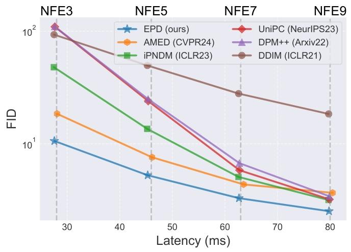 |
|---|
| 图1. 不同求解器在扩散模型上的对比。我们在NVIDIA 4090显卡上，针对不同的函数评估次数（NFE）设置，对比了各求解器的Fréchet Inception距离（FID）与延迟（毫秒）。我们提出的EPD-Solver在不增加延迟的情况下，展现出更优异的图像质量。 |
| 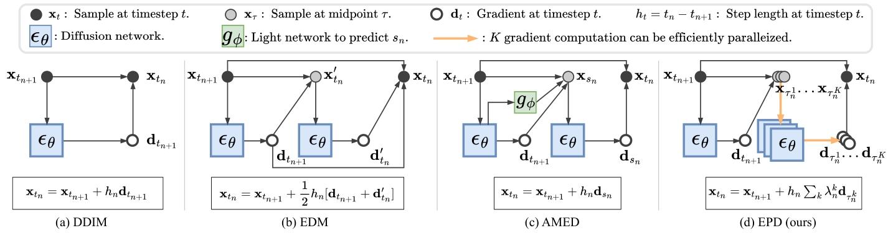 |
|---|
| 图2. 不同ODE求解器的计算图。(a) DDIM求解器[40]（欧拉方法）采用矩形法则，使用起点处的梯度：$d_{t_{n+1}}=\epsilon_{\theta}(x_{t_{n+1}}, t_{n+1})$。(b) EDM求解器[10]（休恩方法）使用梯形法则，对起点和终点时间步的梯度取平均，即$d_{t_{n+1}}=\epsilon_{\theta}(x_{t_{n+1}}, t_{n+1})$和$d_{t_{n}}’=\epsilon_{\theta}(x_{t_{n}}’, t_{n})$，其中$x_{t_{n}}’$是通过欧拉方法得到的额外评估点。(c) AMED求解器[52]优化小型网络$g_{\phi}(\cdot)$以输出中间时间步$s_{n} \in(t_{n}, t_{n+1})$来计算梯度：$d_{s_{n}}=\epsilon_{\theta}(x_{s_{n}}, s_{n})$。由于AMED在序列计算中引入了网络，其延迟略高于其他求解器，如图1所示。(d) 我们的EPD-Solver利用$K$个并行梯度实现更准确的积分近似。我们优化$K$个中间时间步$\tau_{n}^{1}, …, \tau_{n}^{K}$，计算它们的梯度$d_{\tau_{n}^{1}}, …, d_{\tau_{n}^{K}}$，并通过单纯形加权求和对这些梯度进行组合。 |
2. 相关工作
与其他生成模型[6, 13]相比，扩散模型的主要缺点是采样过程存在高延迟问题。现有的加速方法主要分为三类：
基于蒸馏的方法：这类方法通过重新训练或微调整个扩散模型来实现加速。其中一类是轨迹蒸馏，即训练学生模型以更少的步骤模仿教师模型的轨迹[53]。这一过程可通过离线蒸馏[22, 25]实现，即需要构建从教师模型采样的数据集；也可通过在线蒸馏实现，即通过多阶段方式逐步减少采样步骤[1, 29, 36]。另一类研究方向是一致性蒸馏，即强制采样轨迹上的去噪输出保持一致性[11, 27, 42]。除了蒸馏噪声-图像对之外，分布匹配方法会在分布层面匹配真实样本与重建样本[31, 37, 45, 48]。尽管这些方法能显著提升生成质量，但它们会带来高昂的训练成本，且需要精心设计训练流程。
基于求解器的方法：除了微调扩散模型之外，快速常微分方程（ODE）求解器也得到了广泛研究。无训练的方法包括欧拉方法[40]、休恩方法[10]、基于泰勒展开的求解器（DPMSolver[23]、DPM-Solver++[24]）、多步方法（PNDM[21]、iPNDM[50]）以及预测-校正框架（UniPC[51]）。部分求解器需要额外训练，例如AMED-Solver[52]、D-ODE[12]和DDSS[46]。近期研究聚焦于优化时间步调度，代表性研究包括LD3[44]、AYS[34]、GITS[3]和DMN[47]。虽然EPD-Solver也属于这一类，但我们通过蒸馏优化求解器参数，借助并行化实现高质量、低延迟的生成。由于可学习参数数量极少，训练过程仍能保持高效。
基于并行化的方法：尽管并行化在加速扩散模型方面前景广阔，但相关研究仍有待深入。ParaDiGMS[38]利用皮卡迭代实现并行采样，但难以与原始输出保持一致性。Faster Diffusion[19]通过省略部分相邻时间步的编码器计算，实现了解码器计算的并行化，但会牺牲图像质量。Distrifusion[17]将高分辨率图像分割为补丁，并对每个补丁执行并行推理。AsyncDiff[4]通过异步去噪实现模型并行化。与这些专注于降低延迟的方法不同，我们的EPD-Solver利用并行梯度提升图像质量，且不会带来显著的延迟增加。
3. 方法
3.1. 背景
扩散模型通过正向加噪过程逐渐向数据中注入噪声，并通过学习反向去噪过程生成样本，该过程以高斯噪声为初始输入。设$x \sim p_{\text{data}}(x)$表示d维数据，$p(x; \sigma)$表示注入方差为$\sigma^2$的高斯噪声后的数据分布。正向过程由时间尺度$s(t)$和时间$t$处的噪声水平$\sigma(t)$定义的噪声调度控制。具体地，$x = s(t)\hat{x}_t$，其中$\hat{x}_t \sim p’(x; \sigma(t))$。这种正向过程可通过随机微分方程（SDE）[10]表述为：
其中$w \in \mathbb{R}^d$表示维纳过程。在本文中，我们采用Karras等人[10]的框架，设置$\sigma(t) = t$且$s(t) = 1$。生成过程通过方程(1)的反向过程实现。值得注意的是，存在概率流常微分方程（ODE）：
我们学习一个参数化网络$\epsilon_\theta(x, t)$来预测时间$t$时添加到$x$中的高斯噪声。该网络满足：$\epsilon_\theta(x, t) = -t\nabla_x \log p(x; t)$，此时方程(2)简化为：
噪声预测模型$\epsilon_\theta(x, t)$通过最小化带有权重函数$\lambda(t)$的$\ell_2^2$损失进行训练[10, 41]：
给定时间调度$T = \{t_0 = t_{\text{min}}, …, t_N = t_{\text{max}}\}$，数据生成过程从随机噪声$x_{t_N} \sim \mathcal{N}(0, t_{\text{max}}^2 I)$开始，然后通过迭代求解方程(3)计算序列$\{x_{t_{N-1}}, …, x_{t_0}\}$。
3.2. 所提求解器
动机：方程(3)在时间$t_n$处的解可通过积分形式精确计算：
已有多种ODE求解器被提出用于近似该积分。总体而言，这些求解器利用一个或多个点计算梯度，再通过梯度估计积分。设$I$表示积分$I = \int_{t_{n+1}}^{t_n} \epsilon_\theta(x_t, t)dt$，$h_n$表示步长$h_n = t_n - t_{n+1}$。例如，DDIM[40]（欧拉方法）采用矩形法则，使用起点处的梯度：
EDM[10]采用梯形法则，对起点和终点的梯度取平均：
其中$x_{t_n}’$是通过欧拉方法得到的额外评估点，即$x_{t_n}’ = x_{t_{n+1}} + h_n \epsilon_\theta(x_{t_{n+1}}, t_{n+1})$。AMED-Solver[52]优化一个小型网络输出中间时间步$s_n \in (t_n, t_{n+1})$以计算梯度：
其中$x_{s_n} = x_{t_{n+1}} + (s_n - t_{n+1})\epsilon_\theta(x_{t_{n+1}}, t_{n+1})$。DDIM、EDM和AMED-Solver的计算图如图2所示，直观展示了它们各自的积分近似过程。
与DDIM相比，EDM和AMED通过引入额外的梯度计算时间步（$t_n$和$s_n$）提升了积分估计精度。我们方法的核心动机是利用多个时间步减少截断误差。此外，由于额外梯度的计算相互独立，它们可高效并行化，不会增加推理延迟。在本文中，我们提出集成并行方向（EPD）求解器，通过融入多个中间时间步优化积分估计。具体地，积分近似为：
其中$\tau_n^k \in (t_n, t_{n+1})$是中间时间步，权重满足单纯形组合条件$\lambda_n^k \geq 0$且$\sum_{k=1}^K \lambda_n^k = 1$。
每个中间时间步$\tau_n^k$处的状态通过欧拉方法计算：
$x_{\tau_n^k} = x_{t_{n+1}} + (\tau_k - t_{n+1})\epsilon_\theta(x_{t_{n+1}}, t_{n+1})$。每个梯度计算$\epsilon_\theta(x_{\tau_n^k}, \tau_n^k)$均可完全并行化，在保证效率的同时不增加推理延迟。实际上，利用多个时间步的梯度估计改进积分近似可通过向量值函数的中值定理从理论上证明。
定理1（[28]）：当函数$f$的值属于d维向量空间，且在闭区间$[a, b]$上连续、在开区间$(a, b)$上可微时，存在$c_k \in (a, b)$、$\lambda_k \geq 0$且$\sum_{k=1}^n \lambda_k = 1$，使得：
在去噪过程中，函数输出为d维向量$x \in \mathbb{R}^d$。根据定理1，$\epsilon_\theta(x_t, t)$在区间$[t_n, t_{n+1}]$上的精确积分可表示为d个中间点处梯度的单纯形加权组合，再乘以区间长度$h_n = t_n - t_{n+1}$，如方程(9)所示。
参数优化与推理：[18, 30]发现暴露偏差（即训练与采样输入的不匹配）是导致误差累积和采样偏移的关键因素。为缓解这一问题，他们分别提出对网络输出进行缩放和对时间步进行偏移。受这些见解启发，我们引入两个可学习参数$o_n$和$\delta_n^k$，分别用于扰动网络输出的尺度和时间步。我们的EPD-Solver遵循如下更新规则：
我们将步骤$n$处的参数定义为$\Theta_n = \{\tau_n^k, \lambda_n^k, \delta_n^k, o_n\}_{k=1}^K$，并将N步采样过程的完整参数集记为$\Theta_{1:N}$。因此，参数总数为$N(1 + 3K)$。
为确定$\Theta_{1:N}$，我们采用基于蒸馏的优化过程。具体地，给定含N个步骤的学生时间调度$T_{\text{stu}} = \{t_0 = t_{\text{min}}, …, t_N = t_{\text{max}}\}$，我们在$t_n$和$t_{n+1}$之间插入M个中间步骤，即$T_{\text{tea}} = \{t_0, …, t_n, t_n^1, …, t_n^M, t_{n+1}, …, t_N\}$，以生成更精确的教师轨迹。训练过程首先通过任意ODE求解器（例如DPM-Solver）生成教师轨迹，并存储参考状态$\{y_{t_n}\}_{n=0}^N$。之后，我们使用相同的初始噪声$y_{t_N}$采样学生轨迹，并优化参数$\{\Theta_n\}_{n=1}^N$，使学生轨迹$\{x_{t_n}\}_{n=0}^N$通过某种距离度量$dist(\cdot, \cdot)$与教师轨迹对齐。对于含噪状态$\{x_{t_n}\}_{n=1}^N$，我们使用平方$\ell_2$距离作为$dist(\cdot, \cdot)$。对于生成样本$x_{t_0}$，我们在ImageNet预训练的Inception网络[43]最后一层的特征空间中计算平方$\ell_2$距离。特别地，为改进$x_{t_n}$与$y_{t_n}$的对齐效果（由于$x_{t_n}$的值依赖于参数$\Theta_1$至$\Theta_n$），我们通过最小化以下目标优化这些参数：
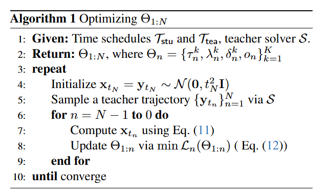
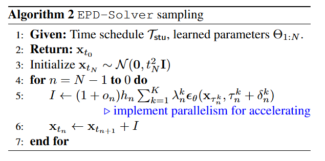
在一次训练循环中，我们需要N次反向传播。完整的训练算法如算法1所示，推理过程如算法2所示。默认情况下，我们在第一步采用解析第一步（AFS）技巧[5]，通过直接使用$x_{t_N}$作为方向节省一次NFE。
面向现有求解器的EPD-Plugin：EPD-Solver可应用于现有求解器以进一步改进扩散采样。核心思想是用多个并行分支替换它们原有的梯度估计。作为代表性案例，我们基于多步iPNDM采样器[21, 50]进行演示，将修改后的求解器称为EPD-Plugin。由于篇幅限制，详细描述见补充材料A.2。
3.3. 讨论
与多步求解器的对比：尽管多步求解器[21, 24, 50, 51]也使用多个梯度近似积分，但它们通常依赖泰勒展开或多项式外推对历史梯度进行线性组合。相比之下，我们的方法基于向量值中值定理，通过优化当前时间区间内梯度的凸组合实现。通过聚焦区间内梯度，我们的方法能对积分进行更准确、更自适应的近似。
与AMED-Solver的对比：AMED-Solver[52]每步使用单个中间时间步估计方向。与之不同，我们的EPD-Solver通过凸加权方案组合多个中间梯度，且不会增加推理延迟。虽然当轨迹接近一维时单个方向可能足够，但[3]中的PCA分析表明，第一主成分仅解释65%的方差，这意味着多个方向能更好地捕捉潜在几何结构。
为验证这一点，我们在3步调度下进行对照实验。如图3所示，我们在1000个随机样本上计算教师与学生轨迹的$\ell_2$误差，并改变中间梯度数量$K$。结果显示，当$K$从1增加到2时误差显著下降，但当$K > 2$时改进逐渐减弱，表明两个方向已能捕捉轨迹的大部分结构。
| 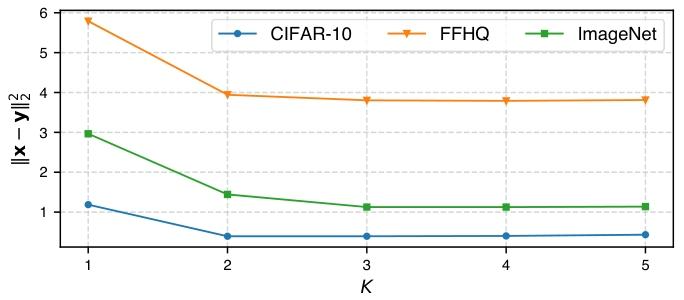 |
|---|
| 图3. 教师轨迹与学生轨迹之间的$\ell_{2}$误差随$K$值的变化。 |
此外，与AMED-Solver使用神经网络预测样本特定的插值点不同，我们的EPD-Solver以即插即用的方式学习全局采样参数，不会产生额外的运行时成本。
4. 实验
本节组织结构如下：
- 第4.1节概述实验设置。第4.2节将我们的EPD-Solver和EPD-Plugin与最先进的ODE采样器进行对比。
- 第4.3节分析并行方向数量$K$对图像质量和推理延迟的影响。
- 第4.4节对EPD-Solver的主要组件进行消融研究。
- 第4.5节展示采样过程和生成图像的定性可视化结果。
4.1. 实验设置
模型：我们在基于扩散的图像生成模型上测试ODE求解器，涵盖像素空间模型[10]和潜空间模型[32]，图像分辨率从32到512不等。对于像素空间模型，我们评估[10]中预训练的CIFAR 32×32[15]、FFHQ 64×64[9]、ImageNet 64×64[33]模型。对于潜空间模型，我们测试[32]中预训练的LSUN Bedroom 256×256[49]模型和分辨率为512的Stable-Diffusion[32]模型。
基线求解器：我们与三类代表性ODE求解器进行对比：（1）单步求解器：DDIM[40]、EDM[10]、DPM-Solver-2[23]和AMED-Solver[52]；（2）多步求解器：DPM-Solver++3M、UniPC[51]、iPNDM[21, 50]和AMED-Plugin[52]；（3）基于并行化的求解器：ParaDiGMS[38]。为保证公平对比，我们遵循其原始论文[10, 24, 51]推荐的时间调度。具体而言，对DPM-Solver-2、DPM-Solver++(3M)和UniPC使用logSNR调度，对AMED-Solver[52]使用时间均匀调度，对其余基线采用$\rho=7$的多项式时间调度。ParaDiGMS[38]的实现细节见补充材料A.3。
评估：我们在低NFE预算（$NFE \in \{3,5,7,9\}$）下测试EPD-Solver和EPD-Plugin，并应用AFS[5]技巧。当$K=1$时，EPD-Solver和EPD-Plugin与基线的NFE相同；当$K>1$时，每步包含$K-1$次额外NFE，但并行化确保延迟不变。我们使用“并行函数评估次数（Para. NFE）”表示并行执行下的有效NFE。我们通过在50k图像上计算Fréchet Inception距离（FID）评估样本质量。对于Stable-Diffusion，我们使用从MS-COCO验证集[20]采样的提示生成30k图像来评估FID。
实现细节：我们使用Adam优化器在10k图像上优化参数，批量大小为32。为防止过拟合，我们使用sigmoid技巧约束$o_n$和$\delta_n^k$，使其保持在[-0.05, 0.05]范围内。由于参数数量少（实验中为6到45个），训练效率很高——在单张NVIDIA 4090上训练CIFAR-10约需3分钟，在4张NVIDIA A800 GPU上训练LSUN Bedroom 256×256约需30分钟。为生成教师轨迹，我们使用DPM-Solver-2求解器并注入$M=6$个中间时间步。更多实现细节见补充材料A.1。
4.2. 主要结果
在表1中，我们将$K=2$的EPD-Solver与基线求解器在CIFAR-10、FFHQ、ImageNet和LSUN Bedroom数据集上的FID分数进行对比。结果表明，我们的学习方向在所有数据集和NFE值下均实现了一致且显著的改进。具体而言，在9次并行函数评估（Para. NFE）下，我们在ImageNet和LSUN数据集上的FID分数分别为4.27和5.01，而次优基线分别为5.44和5.65，改进明显。此外，在低NFE场景下（如LSUN Bedroom的3次NFE），EPD-Solver的FID分数达到13.21，显著优于次优基线求解器（AMED-Solver的58.21）。我们进一步评估了应用于iPNDM求解器的EPD-Plugin，发现当步骤足够大时，它的性能优于EPD-Solver，这与我们的预期一致——iPNDM仅在步骤足够大时才能从历史梯度中获益；而在小NFE下，这种优势不太明显。
| 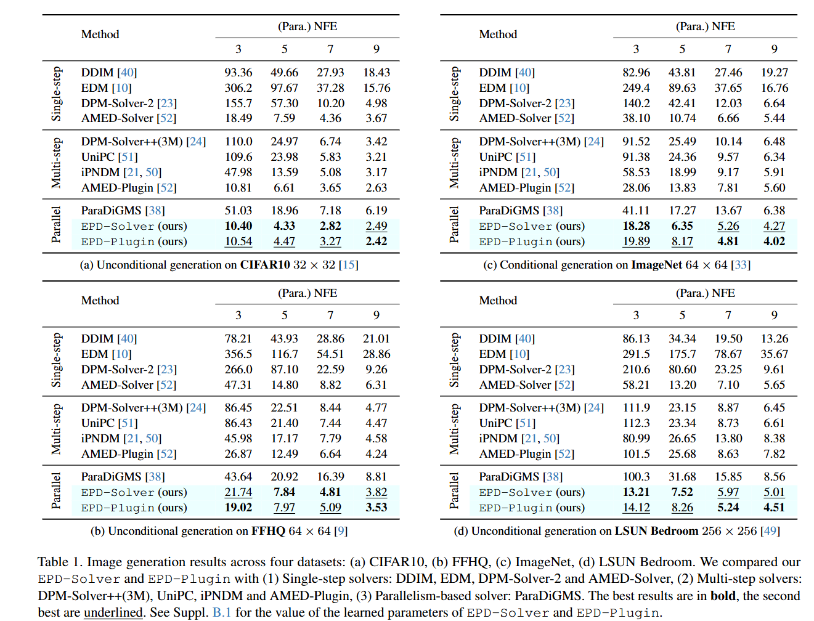 |
|---|
| 表 1. 四个数据集上的图像生成结果：(a) CIFAR10、(b) FFHQ、(c) ImageNet、(d) LSUN Bedroom。我们将所提出的 EPD-Solver 和 EPD-Plugin 与以下几类求解器进行了对比：(1) 单步求解器：DDIM、EDM、DPM-Solver-2 和 AMED-Solver；(2) 多步求解器：DPM-Solver++(3M)、UniPC、iPNDM 和 AMED-Plugin；(3) 基于并行化的求解器：ParaDiGMS。最佳结果以粗体显示，次佳结果以下划线标注。EPD-Solver 和 EPD-Plugin 的学习参数值详见补充材料 B.1。 |
我们在StableDiffusion v1.5上评估EPD-Solver方法，设置无分类器引导权重为7.5，并在表2中报告MS-COCO验证集上的FID分数。此外，我们对比了官方实现推荐的DPM-Solver(2M)++和最新的最先进求解器AMED-Plugin Solver生成的样本质量。结果表明，我们提出的方法始终具有优越性。
| 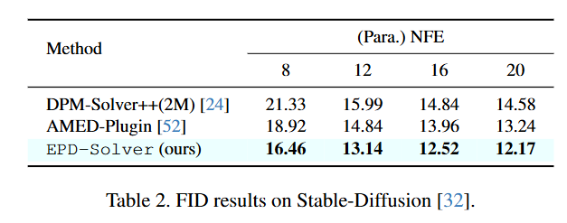 |
|---|
| 表 2. Stable-Diffusion [32] 上的 FID 结果。 |
4.3. 并行方向数量的影响
不同$K$值下的图像质量：在图4中，我们对比了不同$K$值下EPD-Solver生成的图像质量。如预期，增加中间点数量可提升FID分数。例如，在FFHQ数据集的3次并行函数评估（Para. NFE）下，当$K$从1增加到2时，FID分数从26.0降至22.7。此外，结果表明当$K>2$时改进逐渐减弱。例如，在ImageNet的9次并行函数评估（Para. NFE）下，$K=2$和$K=3$的FID分数分别为4.20和4.18，改进极小。
不同$K$值下的延迟：由于每个中间梯度均可完全并行化，我们研究增加$K$是否会显著影响延迟。表3展示了在单张NVIDIA 4090上的推理延迟，通过1000张生成图像（批量大小为1）评估，报告平均推理时间及95%置信区间。对于CIFAR-10、FFHQ和ImageNet，将$K$增加到3不会显著影响延迟；对于LSUN Bedroom，当$K=3$时延迟略有增加。但前期结果表明，$K=2$已能实现显著的质量改进。因此，设置$K=2$可实现有效权衡，在不增加额外推理成本的前提下实现高质量图像生成。
| 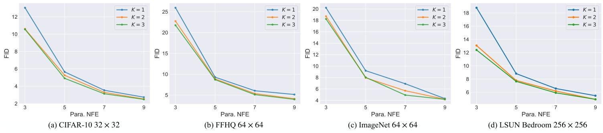 |
|---|
| 图4. 不同数据集和并行方向数量（$K$）下的FID曲线。(a) CIFAR-10 32×32 (b) FFHQ 64×64 (c) ImageNet 64×64 (d) LSUN Bedroom 256×256 |
| 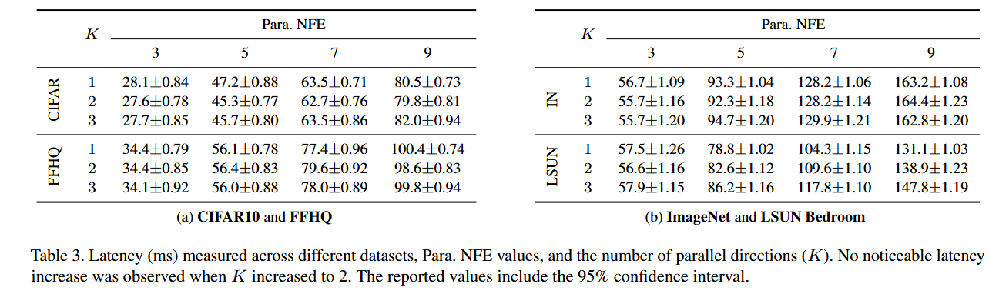 |
|---|
| 表 3. 不同数据集、并行函数评估次数（Para. NFE）和并行方向数量（$K$）下的延迟（毫秒）测量结果。当$K$增加到2时，未观察到明显的延迟增加。报告的值包含95%置信区间。(a) CIFAR10 和 FFHQ (b) ImageNet 和 LSUN Bedroom |
4.4. 消融研究
缩放因子的影响：[18, 30]发现暴露偏差（即训练与采样输入的不匹配）是导致误差累积和采样偏移的关键因素。为缓解这一偏差，他们分别提出对梯度进行缩放和对时间步进行偏移。基于这些见解，我们的EPD-Solver引入两个可学习参数$o_n$和$\delta_n^k$。我们通过对比不使用这些缩放因子的FID分数评估其影响。如表4所示，省略缩放因子会明显降低图像质量。例如，不使用$o_n$时，并行函数评估次数（Para. NFE）=5的FID从4.33升至5.84。
| 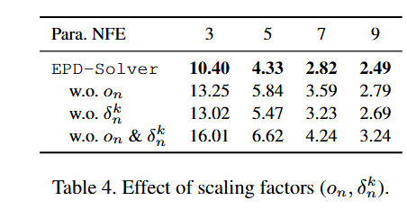 |
|---|
| 表 4. 缩放因子（$o_{n}, \delta_{n}^{k}$）的影响。 |
时间调度的影响：在表5中，我们展示了CIFAR-10上使用常用时间调度（LogSNR、EDM和时间均匀调度）的结果。我们的求解器在时间均匀调度下表现始终更优。
| 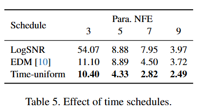 |
|---|
| 表 5. 时间调度的影响。 |
教师ODE求解器的影响：我们在表6中研究不同教师ODE求解器的影响。结果表明，使用DPM-Solver-2生成教师轨迹可实现最佳性能。我们推测这是因为DPM-Solver-2也通过中间点估计梯度，与我们的EPD-Solver差距更小。
| 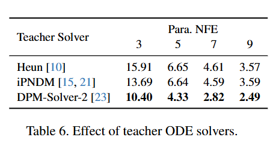 |
|---|
| 表 6. 教师ODE求解器的影响。 |
4.5. 定性分析
轨迹的定性结果：由于高维数据的轨迹可视化具有挑战性，我们采用[21]中的分析框架。具体而言，如图5所示，我们随机选择图像中的两个像素进行局部轨迹可视化，展示其值在采样过程中的演变。给定采样序列$x_{t_N}, x_{t_{N-1}}, …, x_{t_0}$，我们追踪两个随机位置$p_1$和$p_2$处的对应值$v_t^1$和$v_t^2$，然后将$(v_t^1, v_t^2)$表示为数据点并在$\mathbb{R}^2$中可视化。可以清晰地观察到，EPD-Solver（并行函数评估次数（Para. NFE）=5，$K=2$）的像素值轨迹与目标轨迹的距离比其他采样器更近。这表明我们的EPD-Solver能生成更准确的轨迹，显著减少采样过程中的误差。
生成样本的定性结果：在图6中，我们对比了DPM-Solver-2[23]、iPNDM[50]和EPD-Solver使用FFHQ、ImageNet和LSUN Bedroom预训练模型生成的图像。在相同的并行函数评估次数（Para. NFE）下，我们的EPD-Solver在视觉感知质量上始终优于其他采样器。这种优势在低NFE场景（$NFE=3,5$）中尤为明显——EPD-Solver能生成完整清晰的图像，而其他采样器的输出则高度模糊。这些结果凸显了我们的方法在不同NFE设置下的优越性能。更多可视化结果见补充材料B.3。
| 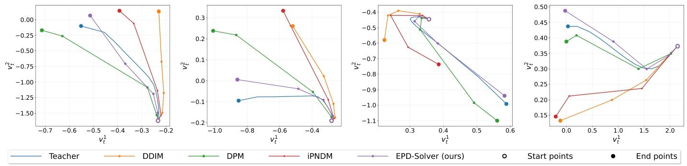 |
|---|
| 图5. 局部采样轨迹分析。该图展示了图像中两个随机选择像素的生成路径。我们使用EPD（并行函数评估次数（Para. NFE）=5，$K=2$）采样器进行采样，并将其教师采样器的轨迹作为目标轨迹。我们展示了DDIM[40]、DPM-Solver[23]和iPNDM[50]在CIFAR-10[15]上的$NFE=5$采样轨迹。 |
| 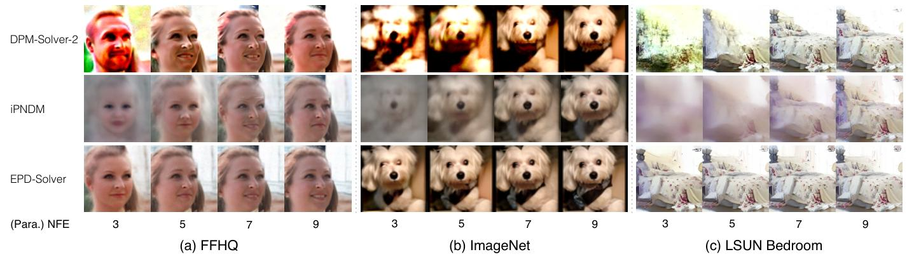 |
|---|
| 图 6. DPM-Solver-2 [23]、iPNDM [50] 与 EPD-Solver 生成样本的对比。与其他采样器相比，即使在$NFE=3$的情况下，EPD-Solver 也能生成高质量结果。更多可视化结果见补充材料 B。 |
5. 结论
在本文中，我们提出了集成并行方向（EPD）求解器，这是一种新型常微分方程（ODE）求解器，通过利用多个并行梯度评估来改进扩散模型的采样过程。与传统的基于求解器的方法在低函数评估次数（NFE）下受限于截断误差不同，我们的方法在保持低延迟推理的同时显著提升了积分近似精度。通过以蒸馏方式优化一小组可学习参数，EPD-Solver实现了高效训练，并能无缝集成到现有扩散模型中。我们还将EPD-Solver推广为EPD-Plugin，这是一种可扩展到现有ODE采样器的插件。在CIFAR10、FFHQ、ImageNet、LSUN Bedroom和Stable Diffusion上的大量实验表明，EPD-Solver在保持计算效率的同时，在FID分数上持续优于最先进的求解器。我们的研究结果表明，并行梯度估计是加速扩散模型的一种强大但尚未充分探索的方向。
A. 额外的实现细节
A.1. EPD-Solver的实现细节
在N步过程中的每个采样步骤（从$t_{n+1}$到$t_n$），求解器会提供一组学习到的参数$\Theta_n = \{\tau_n^k, \lambda_n^k, \delta_n^k, o_n\}_{k=1}^K$，其实现如下：
中间时间步（$\tau_n^k$）：这些是$[t_n, t_{n+1}]$范围内的点，通过几何插值计算得到。具体而言，插值比例$r_n^k \in [0,1]$是通过对可学习标量参数应用sigmoid函数获得的，计算公式为：
单纯形权重（$\lambda_n^k$）：这些非负权重构成$K$个并行梯度的凸组合，满足$\sum_{k=1}^K \lambda_n^k = 1$。它们通过对$K$个可学习标量参数应用softmax函数获得。
输出缩放（$o_n$）：这是一个可学习标量，通过因子$(1 + o_n)$对整体更新方向进行缩放，以缓解训练和采样之间的暴露偏差。为实现这一点，我们引入每个分支的调制项$\sigma_n^k \in [-0.05, 0.05]$，用于缩放相应的权重$\lambda_n^k$。具体而言，我们使用基于sigmoid的变换约束$\sigma_n^k$：
其中$\tilde{\sigma}_n^k$是无约束的可学习参数。最终的缩放因子由下式给出：
时间步偏移（$\delta_n^k$）：这是应用于中间时间步$\tau_n^k$的可训练扰动，生成$\tau_n^k + \delta_n^k$作为去噪网络的输入。我们通过引入缩放因子$s_n^k$来实现这一点，该因子将$\tau_n^k$转换为$\tau_n^k + \delta_n^k$。$s_n^k$与$\delta_n^k$的关系为：
为防止过拟合，$s_n^k$通过基于sigmoid的变换约束在较小范围（例如[0.95, 1.05]）内。具体而言，我们将未归一化参数$\tilde{s}_n^k$映射如下：
A.2. EPD-Plugin的实现细节
EPD-Plugin作为一个模块集成到任何现有ODE求解器中。我们以多步iPNDM[21, 50]采样器为例进行说明。首先简要回顾iPNDM采样器。
iPNDM回顾：设$d_{t_n}$表示时间步$t_n$处的估计梯度。时间步$t_n$的更新公式为：
该规则适用于$n < N-3$；为简洁起见，我们仅展示这种情况。其他情况可参见原始论文。
iPNDM的EPD插件：我们的插件用$K$个并行中间梯度的加权组合替换$d_{t_{n+1}}$，以减少截断误差。与EPD-Solver类似，我们在步骤$n$处引入参数$\Theta_n = \{\tau_n^k, \lambda_n^k, \delta_n^k, o_n\}_{k=1}^K$。梯度现在估计为：
相应地，EPD-Plugin的更新公式变为：
EPD-Plugin的训练开销极小，符合EPD-Solver的轻量级设计理念。由于可学习参数数量有限，优化过程高效。
A.3. ParaDiGMS的实现细节
为与EPD-Solver和EPD-Plugin直接对比，我们在EDM[10]框架中重新实现了ParaDiGMS采样器[38]，因为其公开实现专为Stable Diffusion设计。为确保与单GPU的EPD-Solver进行公平的延迟对比，我们在两张NVIDIA 4090 GPU上运行ParaDiGMS，通过匹配每GPU的并行函数评估次数（Para. NFE）比例来均匀分配工作量。
具体而言，为与EPD-Solver（$K=2$）的并行结构对齐，我们将ParaDiGMS的批处理窗口大小设置为2。
B. 额外的实验结果
其他中间点选择方案
在表7中，我们将$K=2$的EPD-Solver（即两个学习到的中间点）与两种手动选择的中点和随机选择的中点进行了对比。具体而言，手动选择的中点包括起始时间步$t_{n}$、结束时间步$t_{n+1}$（EDM所采用的方案）、几何平均值$\sqrt{t_{n}t_{n+1}}$（DPM-Solver-2所采用的方案）以及算术平均值$\frac{1}{2}(t_{n}+t_{n+1})$。随机中点是从$[t_{n},t_{n+1}]$中均匀采样得到的。我们观察到以下几点：
- 起始点与中点（几何中点和算术中点）的组合显著优于包含终点的组合。例如，使用几何中点和算术中点时，在$NFE=9$的情况下，FID为5.83；而将终点与几何中点、算术中点组合时，FID则分别高达44.38和32.21。
- 包含随机点的组合取得了具有竞争力的结果。例如，将随机点与起始点组合时，在所有NFE值下的FID均优于EDM。
- 最佳的手工设计中间时间步组合与我们学习到的中间时间步组合之间仍存在较大差距，这凸显了我们所提方法的必要性。
| 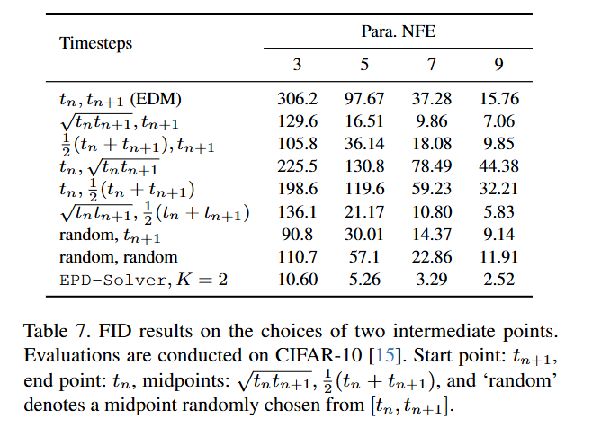 |
|---|
| 表 7. 两个中间点选择方案的FID结果。评估在CIFAR-10[15]上进行。起点：$t_{n+1}$，终点：$t_{n}$，中点：$\sqrt{t_{n}t_{n+1}}$、$\frac{1}{2}(t_{n}+t_{n+1})$，“random”表示从$[t_{n},t_{n+1}]$中随机选择的中点。 |
B.1. EPD-Solver的优化参数
我们在表8和表9中提供了$K=2$的EPD-Solver在CIFAR-10、ImageNet、FFHQ和LSUN Bedroom数据集上不同并行函数评估次数（Para. NFE）下的优化参数。根据补充材料A.1中的实现细节，参数$\tau_{n}^{k}$、$\delta_{n}^{k}$、$o_{n}$的推导如下：
| 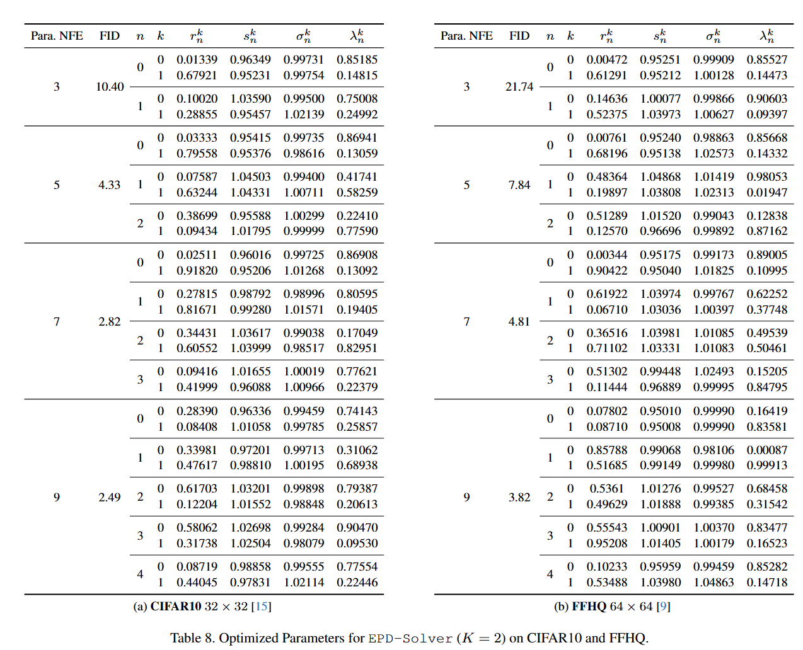 |
|---|
| 表 8. CIFAR10和FFHQ上EPD-Solver（$K=2$）的优化参数。(a) CIFAR10 32×32[15] (b) FFHQ 64×64[9] |
| 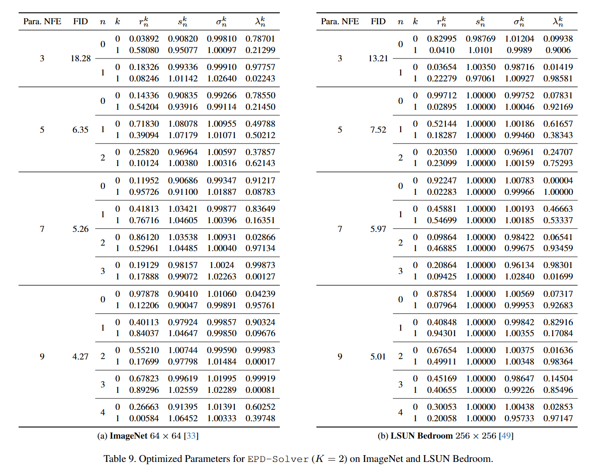 |
|---|
| 表 9. ImageNet和LSUN Bedroom上EPD-Solver（$K=2$）的优化参数。(a) ImageNet 64×64[33] (b) LSUN Bedroom 256×256[49] |
B.2. EPD-Plugin的优化参数
我们在表10和表11中提供了$K=2$的EPD-Plugin在CIFAR-10、ImageNet、FFHQ和LSUN Bedroom数据集上不同并行函数评估次数（Para. NFE）下的优化参数。
| 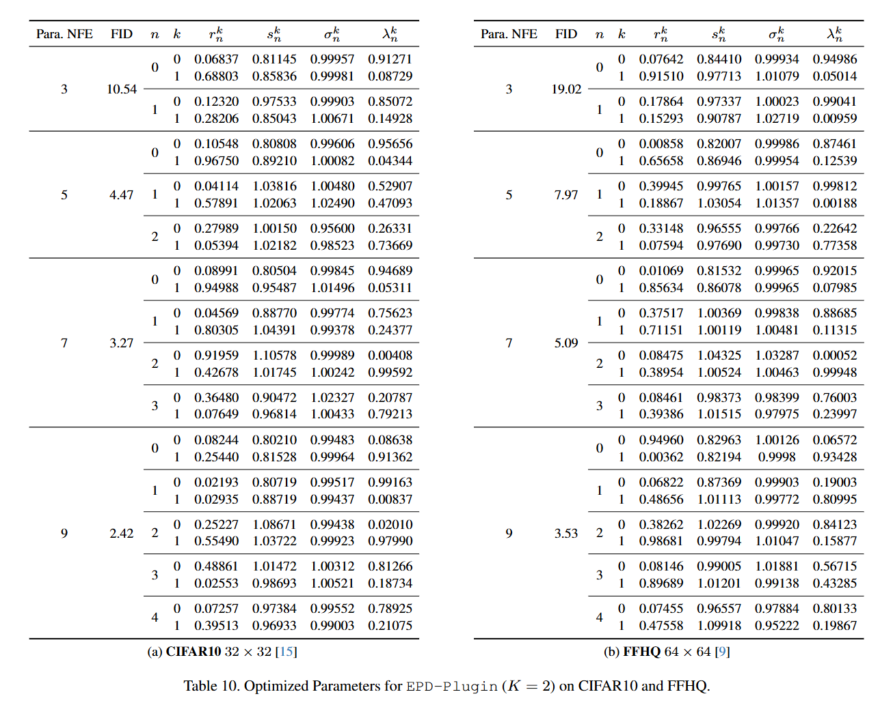 |
|---|
| 表 10. CIFAR10和FFHQ上EPD-Plugin（$K=2$）的优化参数。(a) CIFAR10 32×32[15] (b) FFHQ 64×64[9] |
| 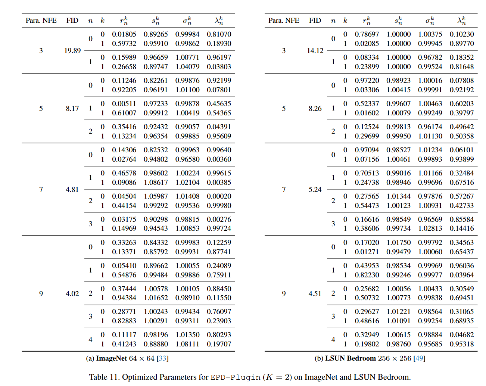 |
|---|
| 表 11. ImageNet和LSUN Bedroom上EPD-Plugin（$K=2$）的优化参数。(a) ImageNet 64×64[33] (b) LSUN Bedroom 256×256[49] |
B.3. 额外的定性结果
此处，我们在图7至图10中展示了不同数据集上的一些定性结果。